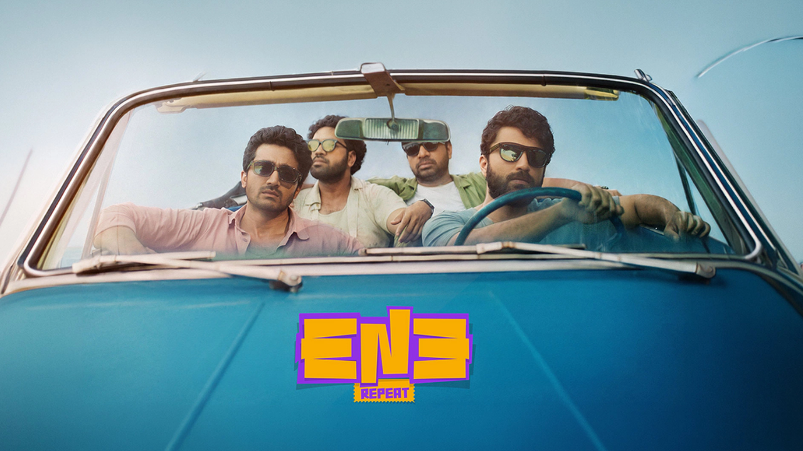
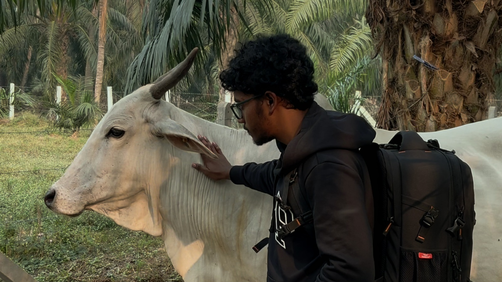
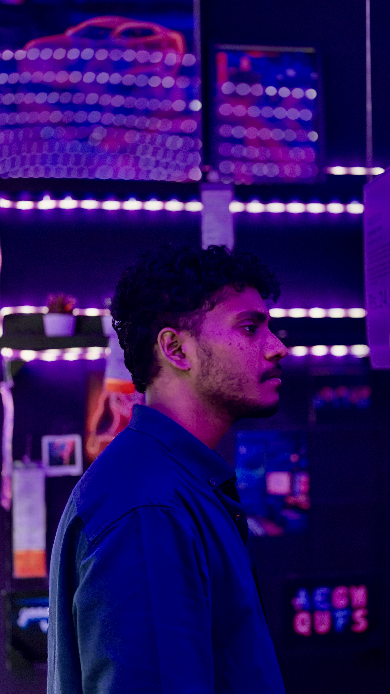
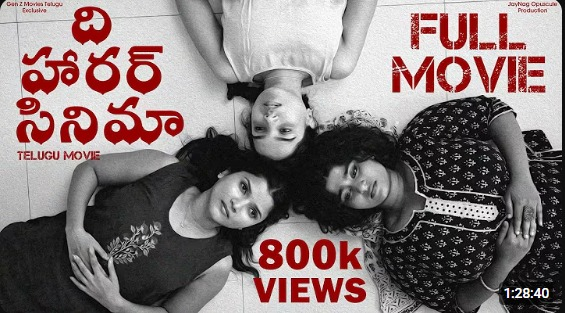
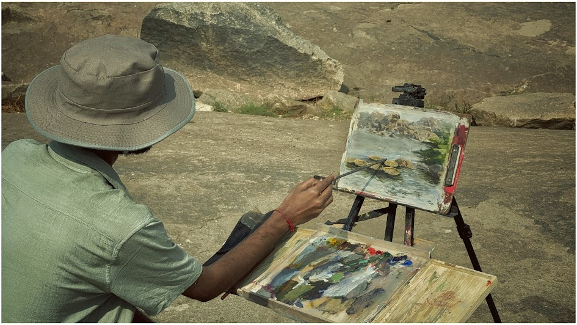
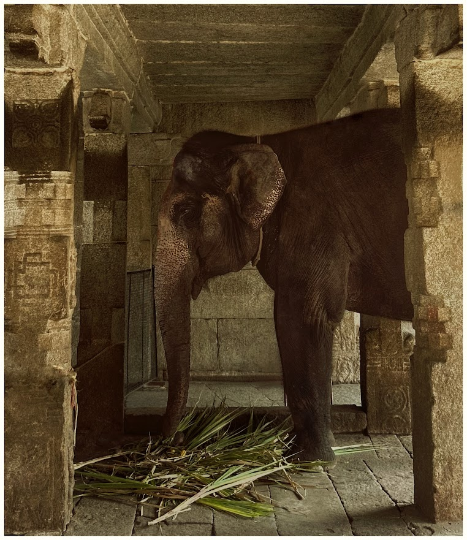
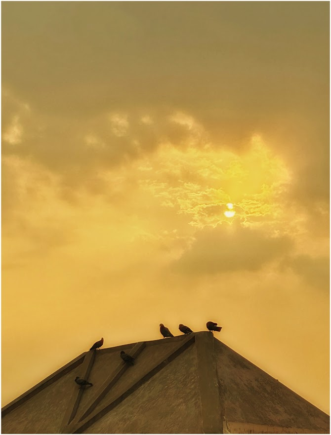

01 / 03 ↗ENE Repeat
Intern — Camera Team
An experience behind the lens, learning to see a story unfold.

Director · Cinematographer · Visual Storyteller
A visual world shaped by light, movement,
and the stories hidden between moments.
I am Surya Prakash Ganti, a filmmaker with a background in cinematography and a passion for direction and scriptwriting.
I completed my Diploma in Filmmaking Technology (DF Tech), specializing in Cinematography, followed by a one-year professional cinematography course at FTIH, Hyderabad.
My interest in direction and scriptwriting has grown through watching films, studying storytelling, and observing the creative choices of filmmakers.
I believe cinema is a powerful medium to express emotions, ideas, and human experiences. My approach is rooted in realism, emotional engagement, and visual impact.
With my cinematography background, I approach every scene with an understanding of visual composition, light, and technical execution — always in service of the story.
My goal is to create meaningful cinema that stays with the audience long after the screen fades to black.

A glimpse into the frames, people
and stories behind the work.

01 / 03 ↗Intern — Camera Team
An experience behind the lens, learning to see a story unfold.
Intern — Camera Team
Experimentation, collaboration and the craft of capturing a moment.

03 / 03 ↗Editor & Co-Cinematographer
Where images and edits work together to build an unsettling world.
Moments, places and stories seen through my lens. A small selection from the frames I've collected along the way.

FRAME — 01 02
02
 03
03

04 05
05

06